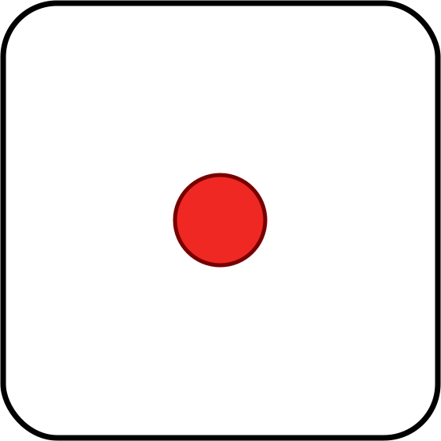
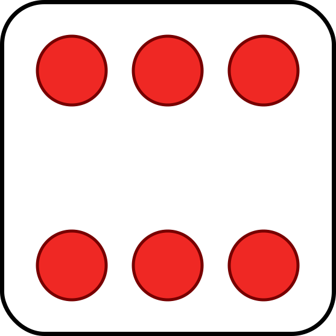

Practical ScalaCheck
Agenda
- Brief introduction
- The important classes in ScalaCheck
- Writing properties
- Tips and techniques
- Boilerplate reduction
Introducing ScalaCheck
scala> import org.scalacheck.Prop.forAll
import org.scalacheck.Prop.forAll
scala> val prop = forAll { s: String =>
| s.length >= 0
| }
prop: org.scalacheck.Prop = Prop
scala> prop.check
+ OK, passed 100 tests.Works out-of-the-box with SBT, too
Introducing ScalaCheck
What ScalaCheck is:
- A bridge between types and values
- What you should be using instead of "stubbed" or sample data
- A conversation about your implementation
- Thorough
Introducing ScalaCheck
What ScalaCheck is not:
- A library for random generation
- A silver bullet
- Fast (???)
Introducing ScalaCheck
More examples
forAll { (list1: List[Int], list2: List[Int]) =>
list1.length < (list1 ::: list2).length
}
[info] ! Falsified after 0 passed tests.
[info] > ARG_0: List()
[info] > ARG_1: List()Constrain generation with ==>
forAll { (list1: List[Int], list2: List[Int]) =>
(list1.length > 0 && list2.length > 0) ==> {
list1.length < (list1 ::: list2).length
}
}[info] + List concatenation: OK, passed 100 tests.
Introducing ScalaCheck
More examples
def brokenReverse[X](xs: List[X]): List[X] =
if (xs.length > 4) xs else xs.reverse
forAll { (xs: List[Int]) => xs.length > 0 ==>
(xs.last == brokenReverse(xs).head)
}[info] ! Falsified after 3 passed tests.
[info] > ARG_0: List("0", "0", "0", "0", "1")
[info] > ARG_0_ORIGINAL: List("219254809",
"-1487516422",
"-1988082558",
"-2147483648",
"-2053120082",
"2147483647")This is called shrinking
Introducing ScalaCheck
More examples
forAll { x: Int =>
Math.abs(x) >= 0
}[info] ! Falsified after 30 passed tests.
[info] > ARG_0: -2147483648scala> Integer.MIN_VALUE
res0: Int = -2147483648
scala> Math.abs(Integer.MIN_VALUE)
res1: Int = -2147483648Introducing ScalaCheck
More examples
forAll { x: Int =>
Math.abs(x) >= 0
}[info] ! Falsified after 30 passed tests.
[info] > ARG_0: -2147483648We could use ==>
Or we could use a different generator for Integers
forAll(Gen.posNum[Int]) { x =>
Math.abs(x) >= 0
}[info] + OK, passed 100 tests.Important Classes
Gen
- Stands for Generator
- Can be used to produce any value for a particular type or a subset of values
- It is a monad, so we can sequence/chain generators to produce new ones
- ScalaCheck ships with many generators, and facilities to create more
Gen
Selected API Generators
import org.scalacheck.Gen._def alphaStr: Gen[String]def posNum[T](implicit n: Numeric[T]): Gen[T]def oneOf[T](xs: Seq[T]): Gen[T]def listOf[T](g: Gen[T]): Gen[List[T]]def listOfN[T](n: Int, g: Gen[T]): Gen[List[T]]And one in a different class:
import org.scalacheck.Arbitrary._def arbitrary[T](implicit a: Arbitrary[T]): Gen[T]Gen
scala> import org.scalacheck.Gen._
import org.scalacheck.Gen._
scala> posNum[Int].sample
res0: Option[Int] = Some(80)
scala> posNum[Int].sample
res1: Option[Int] = Some(17)Gen
Gen is a monad
def cappedString: Gen[String] = for {
c <- alphaUpperChar
s <- listOf(alphaLowerChar)
} yield (c :: s).mkString
scala> cappedString.sample
res2: Option[String] = Some(Rmvbrcgtzvdlnssznckgedmyeeoxwiqjvtiby)The Arbitrary Typeclass
Allows generators to be implicitly summoned
case class Record(s: String)
val genRecord: Gen[Record] = alphaStr.map(Record.apply)
implicit val arbRecord: Arbitrary[Record] = Arbitrary(genRecord)forAll { r: Record =>
// test here using generated Record
}
We can also use the arbitrary[T] method now:
scala> arbitrary[Record].sample
res1: Option[Record] = Some(Record(vpwmFseQRubujRridyQ))Designing Properties
Scenario: Yahtzee game
Have a better "hand" of five dice than your opponent
Straight 
Full house
Four of a kind 
Three of a kind
def winner(h1: Hand, h2: Hand): Hand = ???Can you test this without Scalacheck?
How to test for winning hands?
- Generate two random hands
- Work out the winning hand
- Check it wins
forAll { (h1: Hand, h2: Hand) =>
val h1Score = {
if (h1.p1 == h1.p2 &&
h1.p2 == h1.p3 &&
h1.p3 == h1.p4 &&
h1.p4 == h1.p5) Yahtzee
else if (/* and so on */)
}
val h2Score = // as above
val winningHand = if(h1Score >= h2Score) h1 else h2
winner(h1, h2) ?= winningHand
}Problem: we have reimplemented our application code in Scalacheck
How to test for winning hands?
- Generate some random dice values
- Construct known hands
- Confirm that the correct hand wins
forAll { (y: Die, fhA: Die, fhB: Die) => fhA != fhB ==>
val yahtzee = Hand(y, y, y, y, y)
val fullHouse = Hand(fhA, fhA, fhA, fhB, fhB)
(winningHand(yahtzee, fullHouse) ?= yahtzee) &&
(winningHand(fullHouse, yahtzee) ?= yahtzee)
}We still have untested conditions, such as:
- Different permutations of full house dice positions
- Comparing all winning hands with each other is quadratic!
How to test for winning hands?
- Generate a pair of known hands
- Make sure the one that should win, wins
Step one: create a generator for each winning hand.
val allDice: List[Die] = List(One, Two, Three, Four, Five, Six)
val genYahtzee: Gen[Hand] = oneOf(allDice)
.map(d => Hand(d, d, d, d, d))
val genThreeOfAKind: Gen[Hand] = for {
d1 <- oneOf(allDice)
d2 <- oneOf(allDice diff List(d1))
d3 <- oneOf(allDice diff List(d1, d2))
} yield Hand(d1, d1, d1, d2, d3)
How to test for winning hands?
Step two: order the generators to reflect superior hands.
val orderedGenerators: List[Gen[Hand]] = List(
genYahtzee,
genStraight,
genFullHouse,
genFourOfAKind,
genThreeOfAKind
)
How to test for winning hands?
Step three: Use ScalaCheck to partition the generators.
forAll(chooseNum[Int](1, orderedGens.length - 1)) { idx =>
val (winningGens, losingGens) = orderedGens.splitAt(idx)
// ...
Full disclosure
Due to API restrictions, this is not actually how it is implemented, but the intention is exactly the same. See Github (or talk to me) for details.
How to test for winning hands?
Step four: Pit a hand from one of the better generators against a worse one. The better one should win.
forAll(chooseNum[Int](1, orderedGens.length - 1)) { idx =>
val (winningGens, losingGens) = orderedGens.splitAt(idx)
forAll(oneOf(winningGens), oneOf(losingGens))
{ (winningHand, losingHand) =>
(winner(winningHand, losingHand) ?= winningHand) &&
(winner(losingHand, winningHand) ?= winningHand)
}
}[info] + Winning hand is chosen correctly: OK, passed 100 tests.How to test for winning hands?
Bonus step: Verify what exactly was run.
Use the collect function:
forAll(chooseNum[Int](1, orderedGens.length - 1)) { idx =>
val (winningGens, losingGens) = orderedGens.splitAt(idx)
forAll(oneOf(winningGens), oneOf(losingGens))
{ (winningHand, losingHand) =>
collect(s"${winningHand.score} vs ${losingHand.score}") {
(winner(winningHand, losingHand) ?= winningHand) &&
(winner(losingHand, winningHand) ?= winningHand)
}
}
}How to test for winning hands?
Verifying what exactly was tested
[info] > Collected test data:
[info] 20% Yahtzee vs FourOfAKind
[info] 19% Yahtzee vs ThreeOfAKind
[info] 16% Yahtzee vs FullHouse
[info] 13% Yahtzee vs Straight
[info] 10% FullHouse vs ThreeOfAKind
[info] 9% Straight vs ThreeOfAKind
[info] 6% FourOfAKind vs ThreeOfAKind
[info] 6% Straight vs FourOfAKind
[info] 1% Straight vs FullHouse
Straight
Full house
Four of a kind
Three of a kind
Tips and Techniques
Exhausting Test Cases
Prefer generators over ==>
forAll { (i1: Int, i2: Int, i3: Int) =>
(i1 > 0 && i2 > 0 && i3 > 0) ==> {
passed
}
}[info] ! 3 positive integers: Gave up after only 51 passed tests.
501 tests were discarded.
forAll(posNum[Int], posNum[Int], posNum[Int]) { (i1, i2, i3) =>
passed
}[info] + 3 positive integers: OK, passed 100 tests.Labelling Generators
Clearer data
forAll(arbitrary[Int], arbitrary[Map[Int, String]]) { (i, m) =>
m.get(i).isDefined
}[info] ! Falsified after 0 passed tests.
[info] > ARG_0: 1
[info] > ARG_1: Map()forAll("Index" |: arbitrary[Int],
"Lookup database" |: arbitrary[Map[Int, String]]
) { (i, m) =>
m.get(i).isDefined
}[info] ! Falsified after 0 passed tests.
[info] > Index: -2147483648
[info] > Lookup database: Map()Labelling Properties
forAllNoShrink { (i: Int, j: Int) =>
val (max, min) = (i max j, i min j)
val (maxSq, minSq) = (max * max, min * min)
minSq <= maxSq
}[info] ! Falsified after 2 passed tests.
[info] > ARG_0: 1528767008
[info] > ARG_1: 1356090093forAllNoShrink { (i: Int, j: Int) =>
val (max, min) = (i max j, i min j)
val (maxSq, minSq) = (max * max, min * min)
s"[min: $min, square: $minSq], [max: $max, square: $maxSq]" |:
(minSq <= maxSq)
}[info] ! Falsified after 0 passed tests.
[info] > Labels of failing property:
[info] [min: -2147483648, square: 0],
[max: -2140727206, square: -1698889820]
[info] > ARG_0: -2140727206
[info] > ARG_1: -2147483648
Creating Successful and Failed Data
Insert cool generators here
Use the REPL
Sample 100 generator runs, match on predicate
Using in Integration Tests
Connect to a database
Integration with CI
More tests on the CI server!
Boilerplate Reduction
Using shapeless-scalacheck
Cogen
Removing Arbitraries
Example here
Thank You
Links here